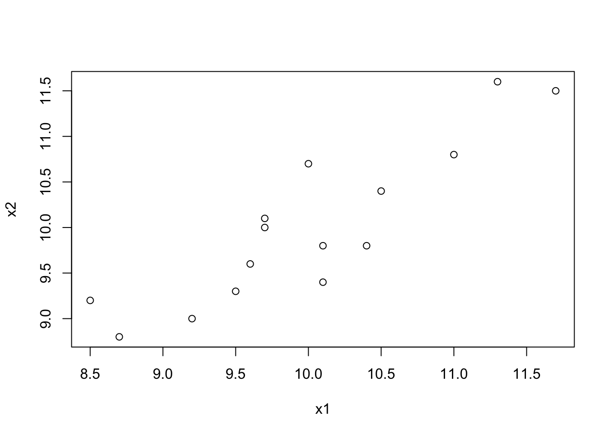
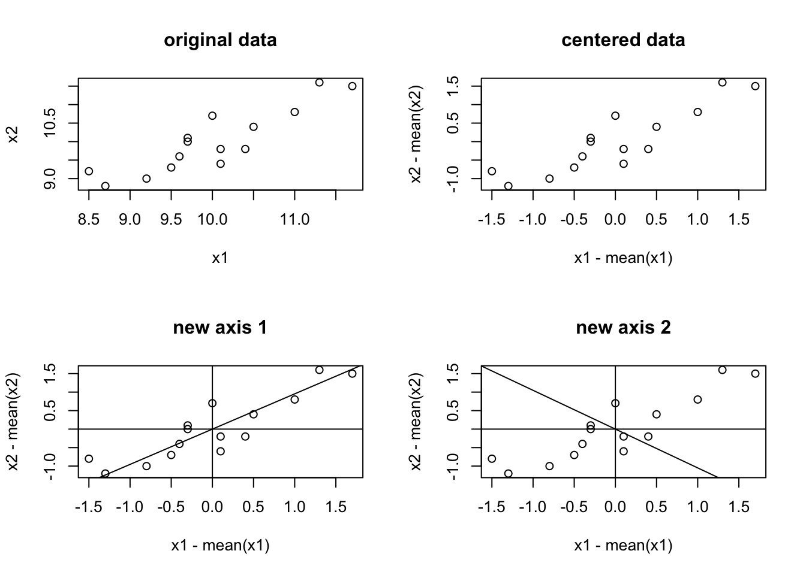

3 Geting Started
3.1 Introduction
multivariate analysis
correlation coefficient
- univariate t-test –> multivariate \(T^2\)-test
- regression, analysis of variance –> multivariate analogs
PCA (Principal Component Analysis): data-analytic techniques, descriptive technique
3.2 A Hypothetical Example
x1 = c(10.0, 10.4, 9.7, 9.7, 11.7, 11, 8.7, 9.5, 10.1, 9.6, 10.5, 9.2, 11.3, 10.1, 8.5)
x2 = c(10.7, 9.8, 10.0, 10.1, 11.5, 10.8, 8.8, 9.3, 9.4, 9.6, 10.4, 9.0, 11.6, 9.8, 9.2)
x = data.frame(x1, x2); x## x1 x2
## 1 10.0 10.7
## 2 10.4 9.8
## 3 9.7 10.0
## 4 9.7 10.1
## 5 11.7 11.5
## 6 11.0 10.8
## 7 8.7 8.8
## 8 9.5 9.3
## 9 10.1 9.4
## 10 9.6 9.6
## 11 10.5 10.4
## 12 9.2 9.0
## 13 11.3 11.6
## 14 10.1 9.8
## 15 8.5 9.2- paired difference t-test
- two-way ANOVA
- heterogeneity of variance
- scatter point figure
plot(x1, x2)
- orthogonal regression line: minimizes the deviations perpendicular to the line itself
- Karl Pearson (1901)
sample mean, variance and covariance
\[\bar{\pmb{x}} = \begin{bmatrix}\bar{x_1} \\ \bar{x_2} \end{bmatrix}\]
apply(x,2,mean)## x1 x2
## 10 10sample variance-covariance matrix
\[\pmb{S} = \begin{bmatrix}s_1^2 & s_{12} \\ s_{12} & s_2^2\end{bmatrix}\]
var(x)## x1 x2
## x1 0.7985714 0.6792857
## x2 0.6792857 0.7342857correlation
\[r = \frac{s_{12}}{\sqrt{s_1^2s_2^2}}\]
cor(x1, x2)## [1] 0.88708063.3 Characteristics Roots and Vectors
Matrix algebra: A \(p\times p\) symmetric, nonsingular matrix (such as the variance-covariance matrix \(\pmb{S}\)), may be reduced to a diagonal matrix \(\pmb{L}\) by premultiplying and postmultiplying it by a particular orthonormal matrix \(\pmb{U}\):
\[\pmb{U}^T\pmb{S}\pmb{U}=\pmb{L}\]
- diagonal elements of \(\pmb{L}\), \(l_1, l_2, ..., l_p\): characteristic roots, latent roots, or eigenvalues of \(\pmb{S}\)
- columns of \(\pmb{U}\), \(\pmb{u}_1, \pmb{u}_2, ..., \pmb{u}_p\): characteristic vectors or eigenvectors of \(\pmb{S}\)
Characteristic roots/Eigenvalues can be obtained from the following determinental equation, called characteristic equation:S
\[|\pmb{S}-l\pmb{I}|=0\text{, where }\pmb{I}\text{ is an identity matrix}\] For this example,
\[|\pmb{S}-l\pmb{I}| = \begin{bmatrix}.7986 - l & .6793 \\ .6793 & .7986 - l\end{bmatrix} = .124963 -1.5329l+l^2=0\]
polyroot(c(0.124963, -1.5329,1))## [1] 0.08638927+0i 1.44651073+0iCharacteristic vectors/Eigenvectors can be obtained by the solution of
\[(\pmb{S}-l\pmb{I})\pmb{t}_i=\pmb{0}\]
and
\[\pmb{u} = \frac{\pmb{t}_i}{\sqrt{\pmb{t}_i^T\pmb{t}_i}}\]
For thie example,
\[(\pmb{S}-l\pmb{I})t_i=\begin{bmatrix}.7986 - 1.4465 & .6793 \\ .6793 & .7986 - 1.4465\end{bmatrix}\begin{bmatrix}t_{11} \\ t_{21} \end{bmatrix} = \begin{bmatrix}0 \\ 0 \end{bmatrix}\]
These are two homogeneous linear equations in two unknowns. Let \(t_{11}=1\), we can get \(t_{21}\)=0.9538. So the first eigenvector:
\[\pmb{u}_1=\frac{\pmb{t}_1}{\sqrt{\pmb{t}_1^T\pmb{t}_1}}=\frac{1}{1^2+0.9538^2}\begin{bmatrix}1 \\ 0.9538 \end{bmatrix}=\begin{bmatrix}0.7236 \\ 0.6902 \end{bmatrix}\]
Similarly, we can get
\[\pmb{u_2}=\begin{bmatrix}-0.6902 \\ 0.7236 \end{bmatrix}\]
So the \(\pmb{u}\) matrix:
\[\pmb{u} = \begin{bmatrix}\pmb{u}_1 & \pmb{u}_2\end{bmatrix} = \begin{bmatrix}0.7236 & -0.6902 \\ 0.6902 & 0.7236 \end{bmatrix}\]
### we can use R function eigen() to eigen-decomposite the variance-covariance matrix
eigen = eigen(var(x)); eigen## eigen() decomposition
## $values
## [1] 1.4464743 0.0863828
##
## $vectors
## [,1] [,2]
## [1,] -0.7236248 0.6901936
## [2,] -0.6901936 -0.7236248### another R function prcomp()
prcomp = prcomp(x);prcomp## Standard deviations (1, .., p=2):
## [1] 1.2026946 0.2939095
##
## Rotation (n x k) = (2 x 2):
## PC1 PC2
## x1 -0.7236248 -0.6901936
## x2 -0.6901936 0.7236248### the standard deviation prcomp$sdev is the square root of eigenvalues
prcomp$sdev^2## [1] 1.4464743 0.0863828### the pca$rotation is the egienvectors
prcomp$rotation## PC1 PC2
## x1 -0.7236248 -0.6901936
## x2 -0.6901936 0.7236248### the pca$x is the principal component variables
prcomp$x## PC1 PC2
## [1,] -0.48313549 0.50653737
## [2,] -0.15141121 -0.42080238
## [3,] 0.21708744 0.20705807
## [4,] 0.14806809 0.27942055
## [5,] -2.26545250 -0.08789182
## [6,] -1.27577965 -0.11129370
## [7,] 1.76894451 0.02890185
## [8,] 0.84494789 -0.16144059
## [9,] 0.34175365 -0.50319424
## [10,] 0.56552734 -0.01337250
## [11,] -0.63788982 -0.05564685
## [12,] 1.26909340 -0.17146997
## [13,] -2.04502193 0.26054808
## [14,] 0.06567623 -0.21374432
## [15,] 1.63759205 0.45639048The \(\pmb{u}\) matrix is orthonormal, which means
\[\pmb{u}_1^T\pmb{u}_1=1, \pmb{u}_2^T\pmb{u}_2=1\text{, and }\pmb{u}_1^T\pmb{u}_2=0\]
Geometrically, it is a principle axis rotation. The elements of the characteristic vectors are the direction cosines of the new axes related to the old.
layout(matrix(1:4,2,2,byrow=T))
plot(x1, x2, main="original data")
plot(x1-mean(x1), x2-mean(x2), main="centered data")
plot(x1-mean(x1), x2-mean(x2), main="new axis 1")
### slope is tangent, first element of eigenvector is cosine
abline(a=0, b=sqrt(1/eigen$vectors[1,1]^2-1));abline(h=0);abline(v=0)
plot(x1-mean(x1), x2-mean(x2), main="new axis 2")
abline(a=0, b=-sqrt(1/eigen$vectors[1,2]^2-1));abline(h=0);abline(v=0)
3.4 The Method of Principal Components
Hotelling, 1933